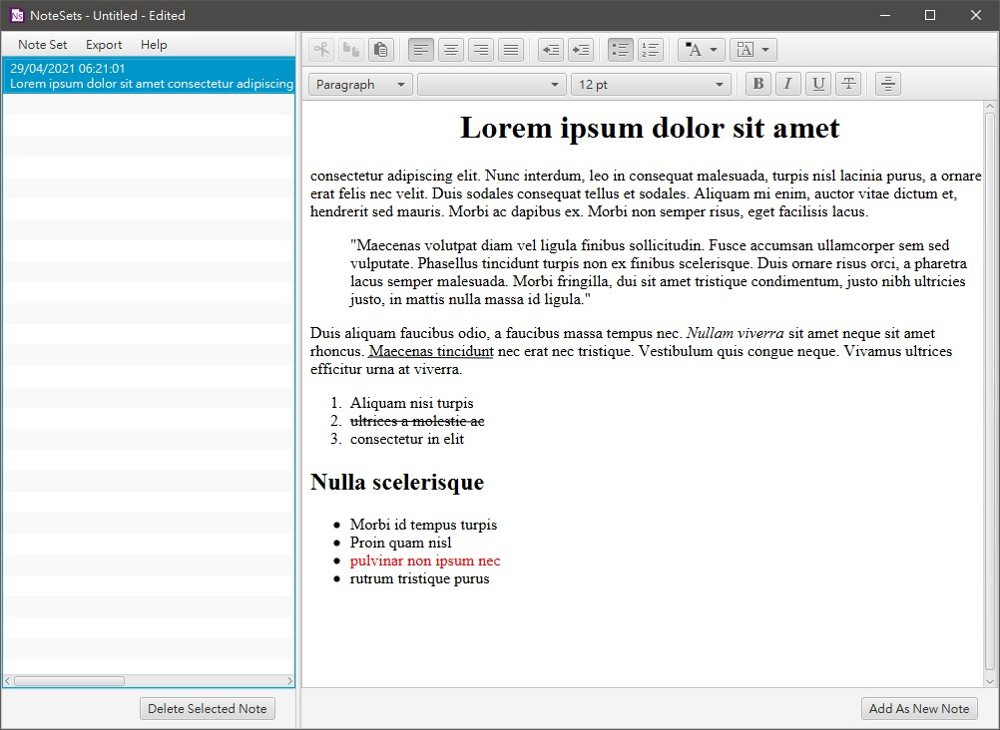

1. Introduction
NoteSets is a simple note-taking application that allows formatting of text, creation of note sets, saving and loading note sets, exporting individual notes or the whole note sets. By creating different note sets, the user can essentially group different notes together.
Back to Top2. Taking New Notes
On startup, NoteSets contains two empty panels. To start taking notes, select from the menu to create a new note set. An editor will then appear in the right panel, and the application title bar will change to NoteSets - Untitled - New. You can now begin writing your first note. Once you have finished writing, press the button at the bottom right, and the current note will be added to the Note Set View in the left panel. The Note Set View shows you all the notes you created thus far, along with the date and time of their creation, and a preview text showing the first 120 characters of the note. The list is sorted in chronological order, hence the latest note will appear at the bottom of the list.
Back to Top3. Viewing Notes
To view a previously created note, select it from the list and
its content will be displayed in the editor.

To write a new note when viewing an older note, delete all the
text from the editor and you can start writing the new note. The
notes are stored in the Note Set View, not in the editor,
clearing the editor thus will not delete stored notes.
Both the editor and the Note Set View allow resizing for easier
writing or preview. To do so, simply drag the middle divider
left or right.
4. Editing Earlier Notes
To edit a previously created note, select it from the list and edit its content in the editor. Once finished editing, click the button to add the edited version to the list. The original version can be deleted if it is no longer needed.
Back to Top5. Deleting Notes
To delete an existing note, select it from the list, then click the button on the bottom left. You will be greeted with a confirmation prompt showing the preview of the selected note. Click the the selected note will be removed from the list.
Back to Top6. Saving Notes
All changes made to a note set, i.e. new notes, edits, and
deletions, will be lost on exit if remained unsaved.
To save the current note set, select or from the
menu.
 The current note set will then be saved as a single .noteset file.
The current note set will then be saved as a single .noteset file.
To prevent any data loss, if changes to the current note set
were detected, you will be greeted a save reminder prompt before
creating a new empty note set, loading another existing .noteset file, or exiting the
application.
If the editor is not empty, NoteSets will also prompt you to add
its contents to the current note set before creating a new empty
note set, loading an existing note set, exporting all notes, or
exiting the application.
If the editor is merely showing an earlier note that is already
the current note set, you can safely ignore this prompt.
7. Loading Notes
To load an existing note set, select from the menu, and choose your desired .noteset file from the file chooser. Once the note set has been successfully loaded, the title bar will change to NoteSets - <noteset_file_name>. For example, NoteSets - lorem_ipsum.noteset if the file lorem_ipsum.noteset has been loaded.
Back to Top8. Title Bar Status
The title bar also acts as a status bar that indicates the
current status of the current note set.
NoteSets — The default title
bar shown on startup.
NoteSets - Untitled - New —
Signifying a new empty note set has been created.
NoteSets -
<noteset_file_name>
— Signifying the currently opened note set file.
NoteSets -
<noteset_file_name> - Edited —
Signifying unsaved changes (new note, and/or, note deletion) has
been made to the current note set file. If the current note set
is a new, unsaved note set, "Untitled" would be displayed
instead of the filename.
NoteSets -
<noteset_file_name> - Saved —
Signifying the changes has been successfully saved to the
indicated note set file.
9. Exporting Notes
For greater note portability, you can export individual notes or
the whole note set.
To export a selected note, first select it from the Note Set
View, then select
from the menu.
You will then be prompted with a message notifying "Exporting,
please wait until a success message is shown". During the wait
please avoid editing, adding or deleting notes, creating,
loading or saving note set, and exiting the application, to
prevent errors.
Once the export is successful, you will be prompted with the
success message and your selected note has been exported to a
.html file, preserving your text
formatting.
 To export the whole note set, select from the
menu.
To export the whole note set, select from the
menu.
You will then be prompted with a message notifying "Exporting,
please wait until a success message is shown". During the wait
please avoid editing, adding or deleting notes, creating,
loading or saving note set, and exiting the application, to
prevent errors.
Once the export is successful, you will be prompted with the
success message and the current note set has been exported as a
.zip file containing all the
individual notes as .html files. The
.html files are named according to
this format:
<number>_<date>_<time>.html
, whereas:
number is the note number of this
note. If it is the first note of the note set, its number is 0;
if it is the second note of the note set, its number is 1, etc.
date is the date of creation of
this individual note, formatted in dd-mm-yyyy.
time is the time of creation of this
individual note, formatted in hh-mm-ss.